ASM — Présentation fonctionnelle complète de la plateforme
Parcours Patient, Établissement et Administration
Assistance Santé Médical · asm-sante.com
Version 1.0 — Juillet 2026
Document confidentiel — dossier de présentation
Avertissement. Toutes les captures d'écran de ce dossier sont réalisées sur un
environnement de démonstration : les noms, numéros de téléphone, comptes et rendez-vous affichés
sont fictifs et servent uniquement à illustrer les fonctionnalités réellement
développées de la plateforme. Aucune donnée personnelle ou médicale réelle n'apparaît dans ce document.
◆ Sommaire
1. La plateforme ASM en un coup d'œilTrois prestations, deux langues, cinq espaces selon le rôle
2. Espace PatientConnexion multicanale, réservation en temps réel, suivi en direct, messagerie, procurations
3. Espace ÉtablissementPatients rattachés, procurations, réservation pour le compte d'un patient
4. Espace ModérateurRégulation quotidienne avec des droits volontairement limités
5. Espace Administrateur — Centre de gestionTableau de bord, planning de régulation, demandes, fiches clients
6. Espace Super administrateurÉquipe, privilèges, validations de suppression, exports et paie
8. Tableau synthétique des fonctionnalitésQui peut faire quoi, et l'état d'avancement réel de chaque brique
9. Architecture techniqueHébergement, données, authentification, SMS national et international, e-mail, push
10. Sécurité et confidentialitéRôles, contrôles serveur, journalisation, mots de passe jamais visibles
1. La plateforme ASM en un coup d'œil
ASM (Assistance Santé Médical) est une plateforme web de coordination de soins et de
transport sanitaire en Algérie. Elle permet à un patient — ou à un établissement de santé agissant
pour lui — de réserver en quelques minutes trois prestations :
Transport médical : trajets vers un centre de soins (dialyse, consultations, hospitalisations), aller simple ou aller-retour, avec véhicule adapté ;
Aide à domicile : interventions d'aides-soignantes et d'infirmiers sur des créneaux calculés en temps réel selon les disponibilités réelles de l'équipe ;
Livraison de médicaments : ordonnance transmise, livraison sur des fenêtres horaires à capacité maîtrisée.
L'interface est entièrement bilingue français / arabe (avec affichage droite-à-gauche),
pensée d'abord pour le téléphone, et reliée à un centre de gestion professionnel pour l'équipe ASM.
Cinq niveaux d'accès coexistent, chacun strictement cloisonné côté serveur : Patient, Établissement,
Modérateur, Administrateur et Super administrateur.
Chaque réservation suit un cycle complet et traçable : demande → confirmation → affectation d'un
intervenant (manuelle ou automatique, avec contrôle anti-conflit) → exécution suivie en direct par le
patient → clôture → avis. Toutes les actions sensibles sont journalisées.
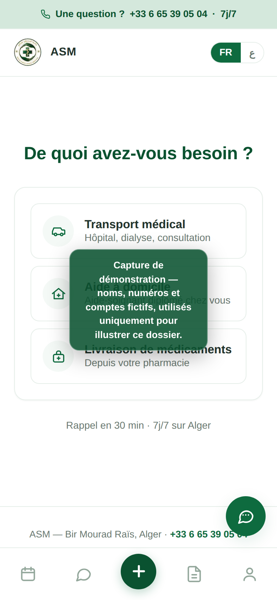
Fig. 1 — Accueil public : les trois prestations, l'appel direct 7j/7 et le passage FR/AR.
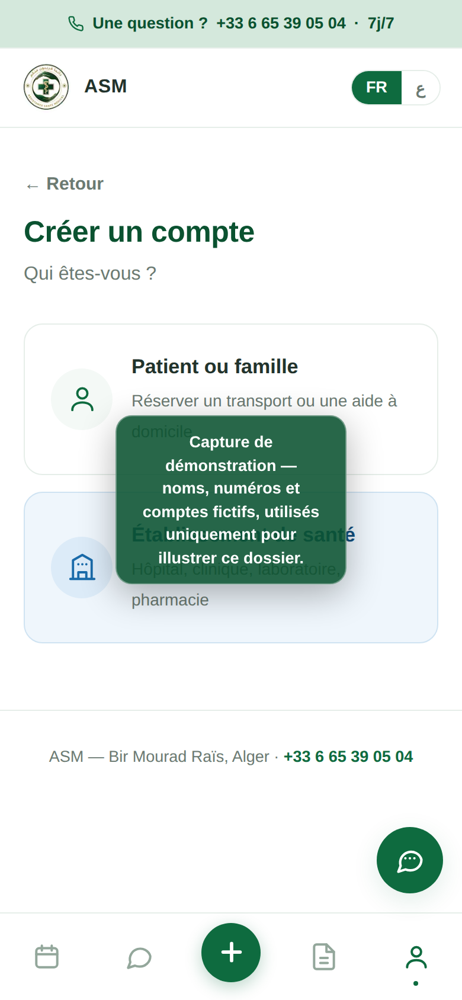
Fig. 2 — Choix de l'espace : patient ou professionnel de santé.
2. Espace Patient
Patient
Connexion multicanale : code SMS ou WhatsApp, connexions rapides Google · Facebook · Apple
Description. L'écran de connexion propose plusieurs chemins adaptés à tous les
publics : réception d'un code à usage unique par SMS ou par WhatsApp (au choix de
l'utilisateur), connexion classique par identifiant / mot de passe, et connexions rapides
Google, Facebook et Apple en un geste. Un lien « Problème de connexion ? » mène vers la
récupération par e-mail (code envoyé via Brevo) et le contact d'un conseiller.
Fonctionnement. Le code de connexion est généré et vérifié par le serveur
d'authentification ; la plateforme l'achemine par le canal choisi. L'envoi des SMS est routé
automatiquement selon le numéro : Elite SMS pour les numéros algériens (réseau national) et
Twilio pour les numéros internationaux (diaspora, famille à l'étranger). En cas d'échec d'un
envoi WhatsApp, le système bascule automatiquement sur le SMS : l'utilisateur n'est jamais bloqué.
Intérêt pour l'utilisateur. Aucun mot de passe à retenir pour les personnes
âgées (code reçu sur le téléphone) ; connexion en deux secondes via Google/Facebook/Apple pour les
aidants et les familles ; WhatsApp très répandu en Algérie.
Intérêt pour ASM. Moins d'appels « je n'arrive pas à me connecter », meilleur
taux d'activation des comptes, identité vérifiée par le téléphone dès l'inscription.
Interfaces et logique développées et intégréesMise en service des canaux liée aux comptes opérateurs (Elite SMS / Twilio / Meta / fournisseurs OAuth)
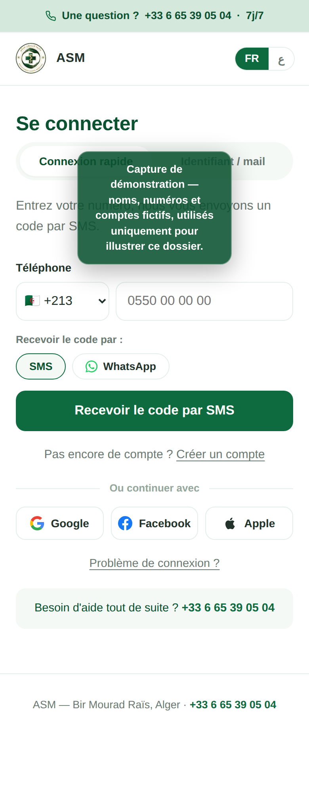
Fig. 3 — Connexion : code par SMS ou WhatsApp, puis « Ou continuer avec » Google · Facebook · Apple.
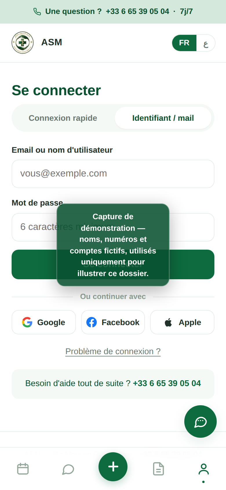
Fig. 4 — Connexion par identifiant / mot de passe (comptes créés par l'équipe ou finalisés par le client).
Patient
Tableau de bord personnel
Description. Dès la connexion, le patient retrouve ses prochains rendez-vous,
l'historique de ses demandes avec leur statut, ses notifications (cloche avec compteur) et l'accès
en un geste à une nouvelle réservation (bouton central « + »).
Intérêt. Cette centralisation réduit les appels téléphoniques entrants,
améliore la visibilité du patient sur son parcours de soins et donne à ASM un canal direct de
communication (notifications et messages officiels).
Description. Le patient choisit la prestation, renseigne le lieu et la commune,
puis la plateforme lui propose uniquement des créneaux réellement disponibles : le moteur de
réservation croise les plannings des intervenants (horaires, jours de repos, congés, absences), leurs
zones de couverture, la durée de l'acte, les temps de trajet et les temps tampons. Les livraisons de
médicaments utilisent des fenêtres horaires (matin / après-midi / soir) à capacité limitée, avec
affichage « complet » ou « bientôt complet ».
Fonctionnement. À la confirmation, une double vérification transactionnelle
empêche toute double réservation du même créneau. Selon le réglage choisi par ASM, l'intervenant le
moins chargé peut être affecté automatiquement, avec notification immédiate.
Intérêt pour l'utilisateur. Réserver comme sur les grandes plateformes de
rendez-vous médicaux, sans appel ni attente, avec la certitude que le créneau est tenable.
Intérêt pour ASM. Zéro surréservation, plannings remplis intelligemment,
montée en charge possible sans multiplier les standardistes.
Opérationnelle (moteur testé, capacité et anti-conflit vérifiés)
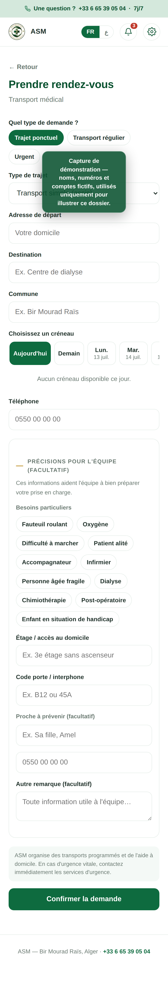
Fig. 6 — Transport médical : départ, destination, date, type de trajet.
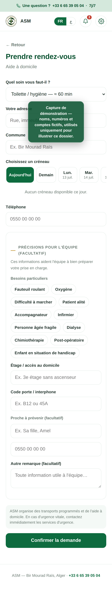
Fig. 7 — Aide à domicile : actes, durées et créneaux calculés en temps réel.
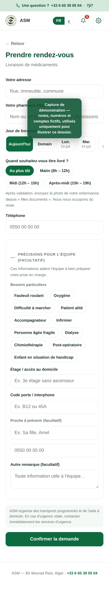
Fig. 8 — Livraison de médicaments : fenêtres horaires avec capacité maîtrisée.
Patient
Suivi en direct — intervenant et véhicule identifiés
Description. Pour chaque demande, le patient suit l'avancement en direct :
demande reçue, confirmée, intervenant assigné, en route, arrivé, en cours, terminée. Pour un
transport, il voit le nom du chauffeur, le modèle du véhicule, sa couleur et sa plaque
d'immatriculation, ainsi qu'un bouton d'appel direct.
Fonctionnement. Les étapes sont horodatées par l'intervenant depuis son espace
mission ; le patient reçoit une notification (et une notification push sur téléphone) à chaque étape
clé. À la fin de l'intervention, il peut laisser un avis (1 à 5 étoiles).
Intérêt. Confiance et sécurité (« je sais qui vient et avec quel véhicule »),
moins d'appels au standard, qualité mesurée en continu par les avis.
Opérationnelle
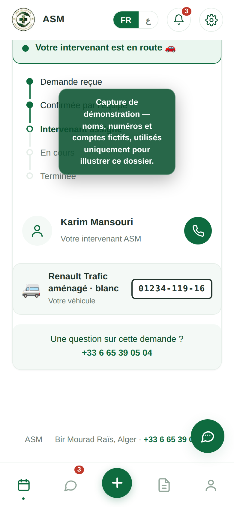
Fig. 9 — Suivi en direct : « votre intervenant est en route », véhicule, couleur et plaque.
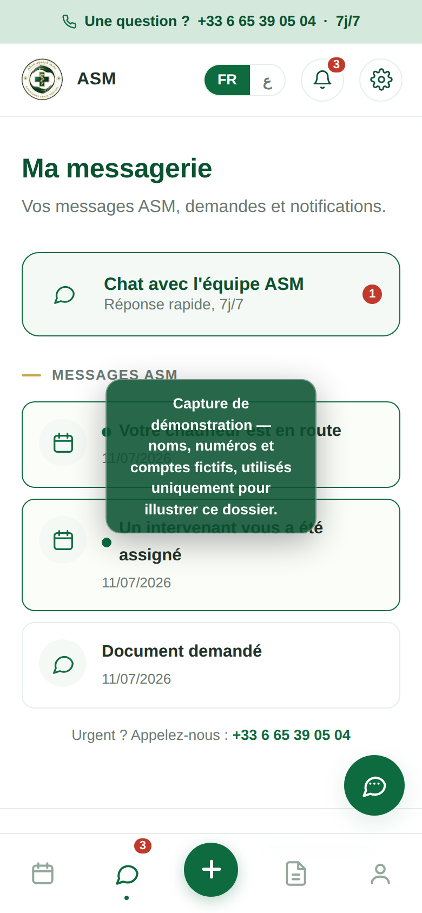
Fig. 10 — Messagerie : échange direct et sécurisé avec l'équipe ASM.
Patient
Procurations : le patient garde la main
Description. Le patient voit la liste des établissements autorisés à réserver
pour lui, avec les services couverts et la date de fin éventuelle. Il accepte les invitations, génère
des codes temporaires et peut révoquer un accès à tout moment ; il est notifié à chaque changement.
Opérationnelle
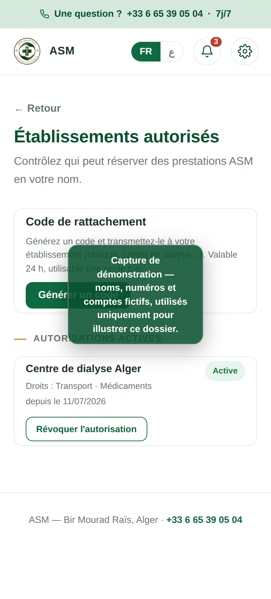
Fig. 11 — Autorisations du patient : qui peut réserver pour lui, et la révocation en un geste.
3. Espace Établissement
Établissement
Patients rattachés et réservation pour le compte d'un patient
Description. Un centre de dialyse, une clinique ou un cabinet dispose de son
propre espace : ses patients rattachés, ses réservations passées et à venir, et la possibilité de
réserver un transport, une aide à domicile ou une livraison au nom d'un patient — uniquement
si une procuration valide le permet.
Fonctionnement. Quatre méthodes de rattachement : invitation acceptée par le
patient, code temporaire, rattachement direct par le staff ASM (vérifié), ou justificatif. Chaque
réservation « pour un patient » contrôle la procuration côté serveur (service couvert, non expirée,
non révoquée) ; le patient est notifié et l'origine de la réservation est tracée sur la demande.
Intérêt pour l'établissement. Organiser les transports de ses patients
(dialyse, chimiothérapie) sans standard téléphonique, avec un historique propre.
Intérêt pour ASM. Un canal B2B récurrent et prévisible (transports réguliers),
tout en gardant le consentement du patient au centre.
Opérationnelle (contrôles de procuration testés)
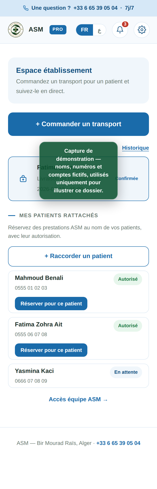
Fig. 12 — Espace établissement : patients rattachés et réservations pour leurs comptes.
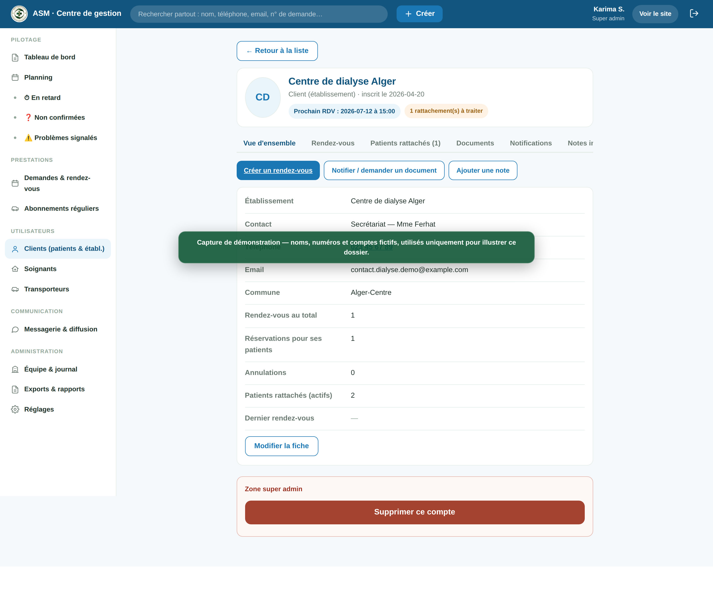
Fig. 13 — Côté centre de gestion : fiche établissement complète (patients rattachés, procurations, réservations, rattachement direct par le staff).
4. Espace Modérateur
Modérateur
La régulation au quotidien, avec des droits volontairement limités
Description. Le modérateur traite le flux quotidien : rendez-vous du jour,
demandes à confirmer ou non affectées, retards, problèmes signalés, messages. Il crée et modifie les
rendez-vous, affecte les intervenants (avec contrôle anti-conflit automatique), notifie les patients
et demande des documents.
Limites du rôle (appliquées côté serveur). Le modérateur ne gère pas l'équipe
interne ni les rôles, ne voit pas les données de paie, et ne peut pas supprimer un compte :
il soumet une demande de suppression motivée, que seul le Super administrateur peut valider ou
refuser. Chaque action est journalisée à son nom.
Opérationnelle
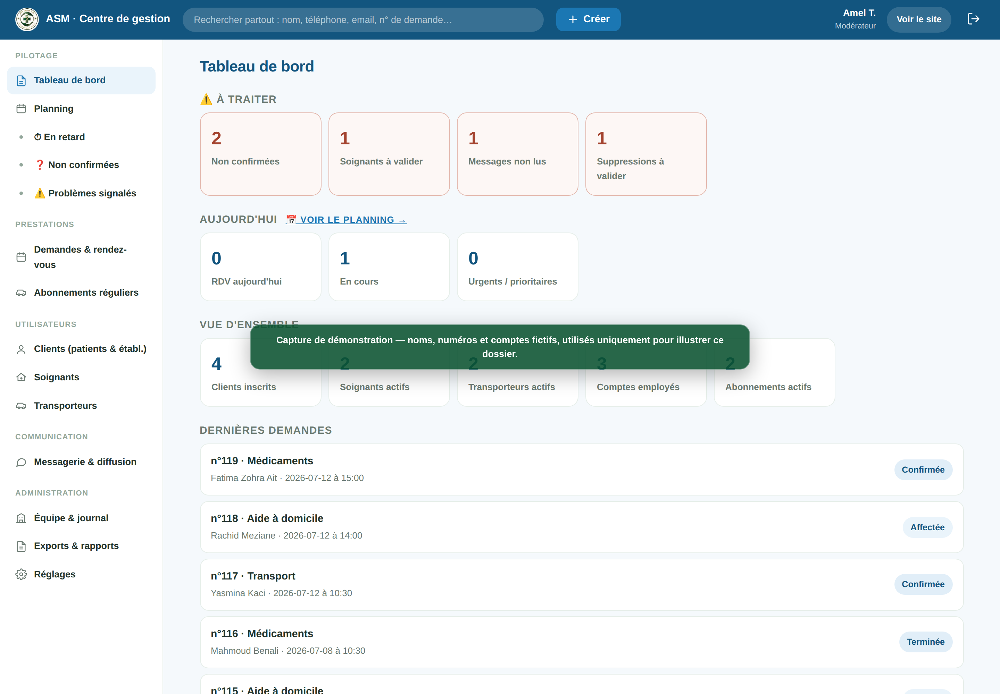
Fig. 14 — Le même centre de gestion, vu par un modérateur : l'essentiel du pilotage, sans les sections réservées.
5. Espace Administrateur — le Centre de gestion
Administrateur
Tableau de bord : les priorités d'abord
Description. La page d'accueil du centre de gestion hiérarchise l'information :
d'abord « À traiter » (demandes non confirmées, retards, problèmes signalés, intervenants à valider,
messages non lus, suppressions à valider), puis l'activité du jour, puis la vue d'ensemble. Une
recherche globale interroge en une saisie les patients, établissements, intervenants et demandes ;
le menu « + Créer » lance les actions courantes.
Intérêt pour ASM. Un coordinateur voit en dix secondes ce qui requiert une
action ; rien ne se perd, tout est daté et attribué.
Opérationnelle
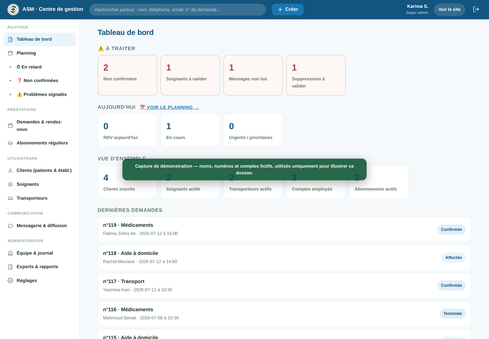
Fig. 15 — Centre de gestion : alertes à traiter, activité du jour, dernières demandes.
Administrateur
Planning de régulation : la journée en un coup d'œil
Description. Vue calendrier jour / semaine : une colonne par soignant et par
chauffeur, les rendez-vous positionnés à leur heure avec leur durée, une colonne « Non affecté » en
tête pour repérer immédiatement ce qui reste à répartir. Jours de repos, congés et absences
apparaissent hachurés ; les heures hors planning de chaque intervenant sont grisées ; un clic ouvre
la demande.
Intérêt pour ASM. Les trous et surcharges se voient d'un coup d'œil ;
l'affectation devient un geste visuel, appuyé par le contrôle anti-conflit du serveur (congés,
horaires, chevauchements, temps de trajet).
Opérationnelle
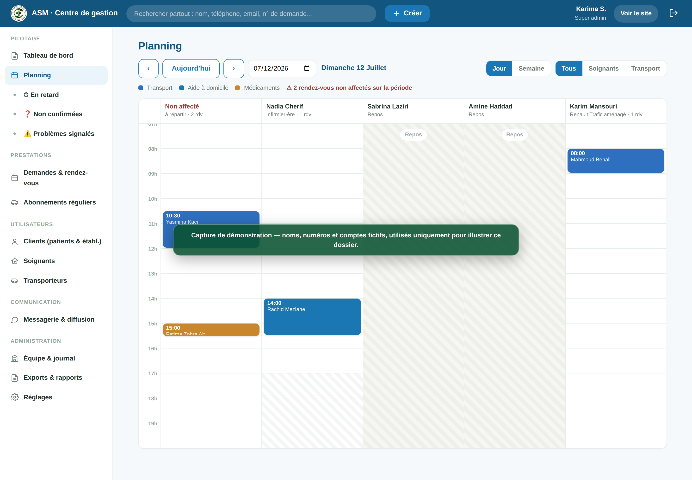
Fig. 16 — Planning : colonnes par intervenant, « Non affecté » en tête, couleurs par prestation.
Administrateur
Demandes & rendez-vous : le flux complet
Description. Toutes les demandes avec filtres (statut, service, jour,
supervision : en retard / non confirmées / problèmes), fiche détaillée, changement de statut,
reprogrammation, priorité, affectation d'un intervenant avec refus motivé en cas de conflit
(« déjà en mission à cette heure », « en congé ce jour-là »…), notifications automatiques au patient
et à l'intervenant à chaque étape.
Opérationnelle
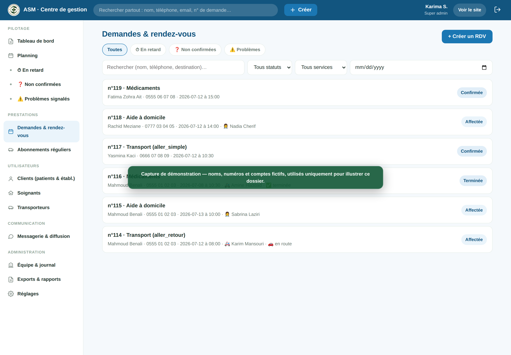
Fig. 17 — Demandes : filtres de supervision et détail de chaque dossier.
Administrateur
Fiche patient complète
Description. Une fiche à onglets par client : vue d'ensemble (coordonnées,
contact famille, compteurs réels), rendez-vous avec avis, établissements autorisés (procurations avec
validation / révocation), documents, notifications envoyées, notes internes, historique des actions.
L'équipe peut créer un compte client (le client définit son mot de passe à sa première connexion),
corriger email / téléphone (synchronisés avec le compte de connexion) et rattacher le patient à un
établissement.
Règle de gouvernance. La suppression d'un compte par un administrateur ou un
modérateur passe par une demande validée par le Super administrateur ; l'historique est
toujours conservé.
Opérationnelle
Fig. 18 — Fiche patient : onglets, procurations, actions d'équipe, zone de suppression encadrée.
6. Espace Super administrateur
Super administrateur
Équipe, privilèges et validations
Description. Le Super administrateur est le seul à nommer les rôles internes
(administrateur, modérateur, standardiste), à valider ou refuser les demandes de suppression
de comptes, et à consulter la matrice des rôles & privilèges — celle-ci reflète les droits
réellement appliqués par le serveur, pas un simple affichage. Le journal d'activité horodate chaque
action sensible avec son auteur.
Règles clés. Un administrateur ne peut créer que des comptes employés ; aucun
rôle ne permet de voir un mot de passe existant ; les accès employés se réinitialisent par mot de
passe temporaire à changement obligatoire.
Opérationnelle
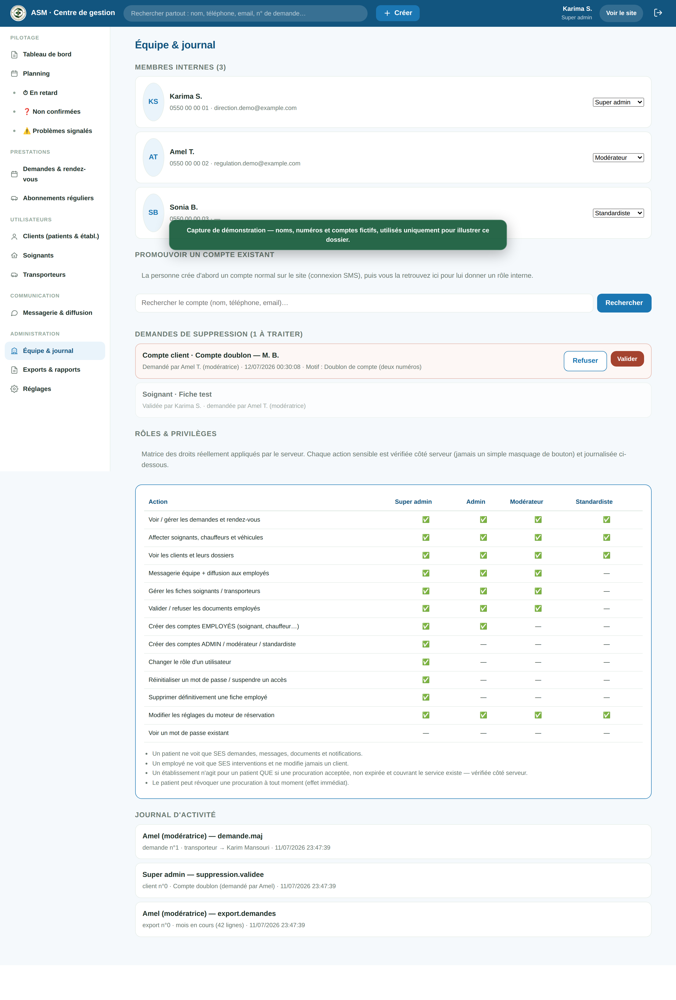
Fig. 19 — Équipe & journal : demandes de suppression à valider, matrice des privilèges, traçabilité.
Super administrateur · Administrateur
Exports & rapports (comptabilité et pilotage)
Description. Exports CSV compatibles Excel : demandes de la période (avec
intervenant, durée, origine établissement, avis), annuaires patients et établissements, et — réservé
au Super administrateur — la paie des intervenants (missions terminées, heures, montant estimé
selon le mode de rémunération). Chaque export est journalisé.
Opérationnelle
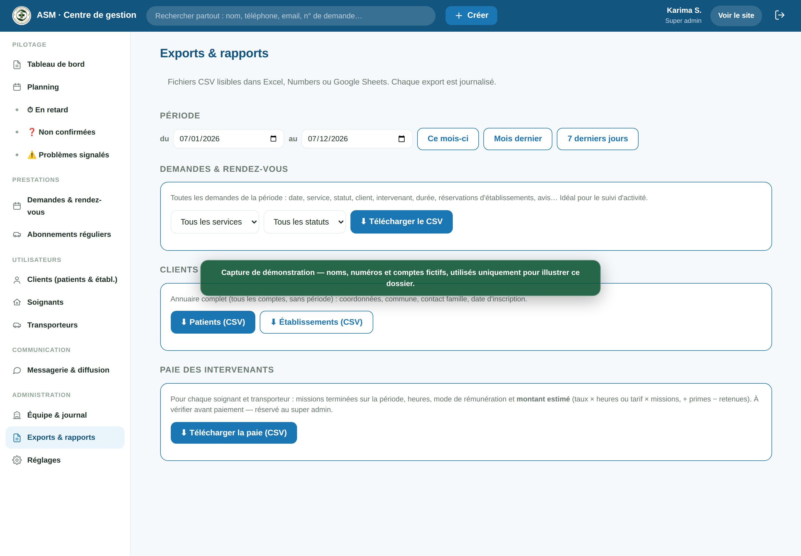
Fig. 20 — Exports : période au choix, demandes / clients / établissements / paie.
Description. Chaque intervenant dispose d'un espace dédié : ses missions ou sa
tournée du jour, la fiche mission complète (client, adresses, consignes utiles — jamais les notes
internes), et des boutons de progression : accepter → en route → arrivé → commencé → terminé, avec
signalement de problème. Chaque appui horodate l'étape et alimente le suivi en direct du patient et
la supervision de l'admin. Le chauffeur voit aussi son véhicule (modèle, couleur, plaque) tel qu'il
apparaît aux patients.
Intérêt pour ASM. La donnée terrain remonte en temps réel sans appel
téléphonique ; retards et problèmes deviennent visibles et mesurables.
Opérationnelle
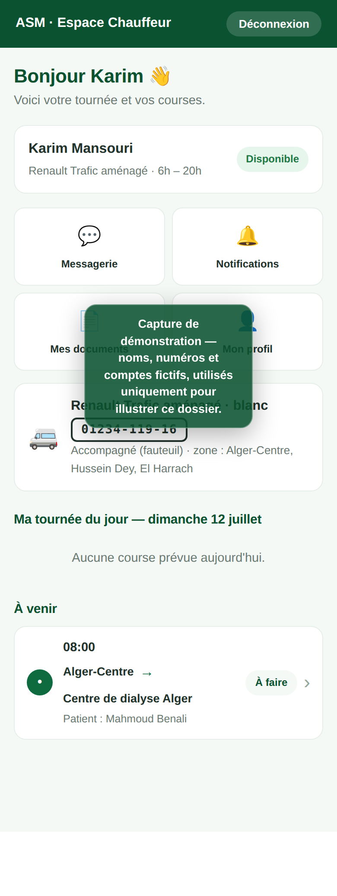
Fig. 21 — Espace chauffeur : tournée du jour et véhicule attitré.
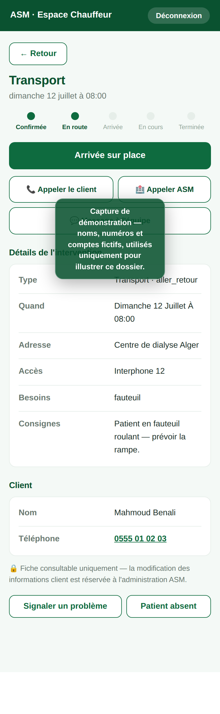
Fig. 22 — Fiche mission : informations utiles et progression en un geste.
7. Parcours utilisateurs illustrés
Parcours Patient. Accueil (Fig. 1) → Connexion par code ou compte
Google/Facebook/Apple (Fig. 3) → Choix du service et du créneau réellement
disponible (Fig. 6–8) → Confirmation et notification
→ Suivi en direct, véhicule identifié (Fig. 9) →
Avis en fin d'intervention → Messagerie si besoin (Fig. 10).
Parcours Établissement. Connexion espace pro → Rattachement du patient
(invitation, code, staff — Fig. 12–13) → Procuration validée, patient notifié
→ Réservation au nom du patient, contrôlée par le serveur
→ Suivi et historique tracés « réservé par l'établissement ».
Parcours Administration. Connexion sécurisée → Tableau de bord :
priorités du jour (Fig. 15) → Planning de régulation (Fig. 16)
→ Affectation avec contrôle anti-conflit (Fig. 17) →
Notifications automatiques patient + intervenant → Clôture, avis, exports
(Fig. 20) → Journal d'audit (Fig. 19).
* Pour un établissement : uniquement pour ses patients rattachés, procuration valide contrôlée par le serveur à chaque réservation.
9. Architecture technique
La plateforme s'appuie sur des services éprouvés, choisis pour leur fiabilité et leur coût maîtrisé,
sans serveur à administrer :
VercelHébergement du site (Next.js), déploiement continu depuis GitHub, HTTPS
SupabaseComptes & authentification (SMS, e-mail, Google / Facebook / Apple), stockage privé des documents
Railway · PostgreSQLBase de données métier (demandes, plannings, procurations, journal)
Elite SMSEnvoi des SMS vers les numéros algériens (routage national automatique)
TwilioEnvoi des SMS vers les numéros internationaux (diaspora, familles à l'étranger)
WhatsApp Cloud APIAcheminement du code de connexion sur WhatsApp, repli SMS automatique
BrevoE-mails transactionnels : récupération de compte, invitations, notifications
Web PushNotifications sur le téléphone (patients et employés), y compris iPhone
GitHubCode source versionné, historique complet des évolutions
Flux d'une réservation :
Patient / Établissement → Site ASM (Vercel) →
Moteur de disponibilités (PostgreSQL) → Confirmation transactionnelle
→ Notifications (interne + push + e-mail) →
Espace mission de l'intervenant → Suivi en direct du patient
Évolutions prévues : application mobile, géolocalisation des véhicules en temps réel (GPS/OBD),
statistiques avancées.
10. Sécurité et confidentialité
Séparation stricte des rôles : patient, établissement, employé, modérateur, administrateur,
super administrateur — chaque droit est vérifié côté serveur à chaque appel, jamais par un simple
masquage de bouton.
Cloisonnement des données : un patient ne voit que ses demandes, messages, notifications et
documents ; un établissement ne voit que ses patients rattachés ; un intervenant n'accède qu'aux
missions qui lui sont affectées.
Mots de passe : jamais stockés en clair, jamais visibles — même par le super administrateur.
Réinitialisation par mot de passe temporaire à changement obligatoire, ou par code e-mail.
Procurations : aucun établissement ne peut agir pour un patient sans autorisation valide,
contrôlée par le serveur à chaque réservation, révocable par le patient à tout moment, avec
notification systématique.
Suppressions encadrées : demande motivée + validation du super administrateur ; l'historique
des prestations est conservé.
Documents : stockage privé, accès par liens signés à durée limitée.
Journalisation : chaque action sensible (création, modification, affectation, export,
suppression) est horodatée avec son auteur et consultable dans le journal d'audit.
Protections techniques : limitation de débit sur les points sensibles, vérification de
signature des webhooks, secrets uniquement en variables d'environnement (jamais dans le code),
en-têtes de sécurité, prévention des doubles réservations par transaction.
Document établi à partir de l'audit du code et de tests fonctionnels réalisés sur un environnement de
démonstration. Les captures présentent des écrans réels de la plateforme, renseignés avec des données
fictives. Les briques signalées « mise en service liée au compte opérateur / fournisseur » sont
développées et intégrées dans le produit ; leur activation dépend de démarches externes (comptes
opérateurs SMS, WhatsApp Business, fournisseurs de connexion) en cours de finalisation.